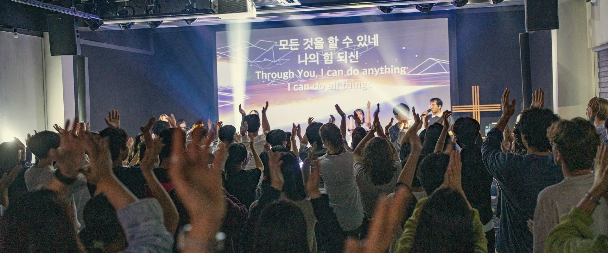

 2026년 표어 변화와 성숙 이 모든 일에 전심 전력하여너의 성숙함을 모든 사람에게 나타나게 하라 디모데전서 4장 15절 1더 깊이 예배하는 교회 2기도의 분량을 채우는 교회 3말씀을 배우는 교회 4헌신의 기쁨을 누리는 교회
추수감사절 섬김 · 11월 6일 (금) 얼감감 프로젝트 쌀, 야채, 과일, 간식에 감사의 마음을 담아 교회로 가져와 주세요.우리가 섬기는 북향민 이웃에게 함께 전합니다. 오전 10시 30분 · 교회 사무실에서 모여 출발
시간기도찬양말씀축복정리배려 함께 드리는 예배, 더 깊어지는 하나님의 임재 하나되는예배 캠페인 시간 · 기도 · 찬양 · 말씀 · 축복 · 정리 · 배려한 걸음씩 함께 걸으며 날마다 새로워지기를 소망합니다 함께 예배할 때 우리는 하나가 됩니다